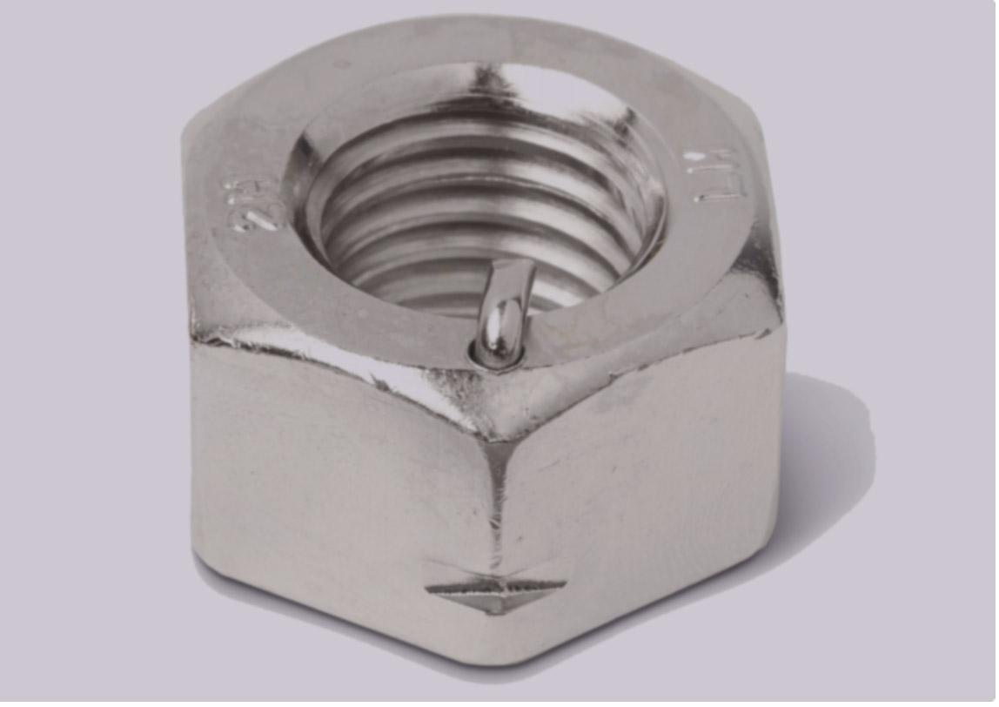
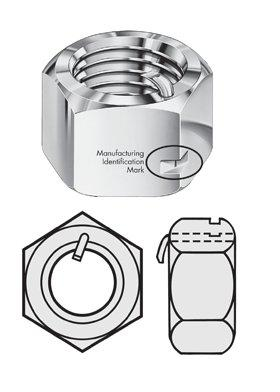

Western EU Exclusive Stockists — the self-locking, anti-vibration nut manufactured only in Texas.
Featured Product
Bon Accord Engineering are the Western EU exclusive stockists of the ANCO® PN-LOC® Nut, manufactured only in Texas. This innovative self-locking nut eliminates vibration-induced loosening without damaging the bolt.
The PN-LOC® is fully reusable, making it ideal for applications where fasteners need to be accessed regularly. It requires no special tools and installs like a standard nut.
Download ANCO® Brochure

Contact our sales team for pricing and availability. We hold stock for immediate dispatch throughout the UK and Western EU.